Hasta aquí las poblaciones eran las que tú declaraste. El Bloque 7 le pregunta a los datos cuántos grupos genéticos sostienen y a cuál pertenece cada individuo, con dos métodos complementarios: un modelo bayesiano de mezcla y el análisis discriminante de componentes principales (DAPC). Después asigna cada genotipo a la población donde es más probable y señala a los posibles migrantes.
Si las plantas que muestreaste vienen de varios acervos genéticos, cada acervo tiene sus propias frecuencias alélicas. El modelo de Pritchard, Stephens y Donnelly (2000) busca esos acervos sin saber de antemano de dónde vino cada planta.
Se suponen K grupos, cada uno con sus frecuencias alélicas P, y para cada individuo la fracción de su genoma que proviene de cada grupo, Q. El algoritmo reparte las copias de los alelos entre los grupos de modo que, dentro de cada grupo, los genotipos se ajusten lo mejor posible al equilibrio de Hardy–Weinberg y los loci sean independientes. Un individuo con Q = (1, 0, 0) viene por completo del grupo 1; uno con Q = (0.6, 0.4, 0) es una mezcla de los grupos 1 y 2.
| Elemento | Qué es | Dónde aparece |
|---|---|---|
| K | Número de grupos que se prueba. La app corre varios valores, de K from a K to. | Tabla de K y gráficas de la tarjeta 2. |
| Q (pertenencia) | Fracción del genoma de cada individuo que viene de cada grupo; promedio de todas las iteraciones muestreadas. | Gráfica de barras, tabla por población y Q matrix (CSV). |
| P (frecuencias) | Frecuencias alélicas de cada grupo, con una distribución previa de Dirichlet con λ = 1 (frecuencias independientes entre grupos). | Se usan en el cálculo; no se muestran. |
| α (mezcla) | Qué tan mezclados están los individuos: pequeño (< 0.2), casi todos puros; cercano a 1 o mayor, mezcla generalizada o K excesivo. Se estima en cada iteración. | Interpretación de la tarjeta 2. |
| Ln P(D) | Estimación de la verosimilitud del modelo con K grupos: media de ln L menos la mitad de su varianza durante el muestreo. | Tabla de K y gráfica Ln P(D) against K. |
| Burn-in e iteraciones | Iteraciones que se descartan mientras la cadena se estabiliza, y las que se promedian después. | Burn-in iterations · Sampled iterations. |
| Réplicas | Corridas independientes con cada K, con semillas distintas; permiten medir la variación de Ln P(D) y el acuerdo entre soluciones. | Replicates per K; columna H′. |
La app ofrece el modelo con mezcla (predeterminado) y el modelo sin mezcla, en el que cada individuo pertenece a un solo grupo; en ambos las frecuencias alélicas son independientes entre grupos. Las bandas dominantes se tratan como loci haploides, una copia por individuo. Los datos faltantes simplemente no aportan. Las corridas se hacen en un hilo de fondo, así que puedes seguir usando la página; al abrir la app con doble clic algunos navegadores no permiten ese hilo y las corridas se hacen en la página misma, con los mismos resultados.
El modelo espera equilibrio de Hardy–Weinberg y loci independientes dentro de cada grupo. En plantas eso falla con frecuencia: la autofecundación y la propagación clonal crean déficit de heterocigotos y ligamiento; las familias muestreadas juntas forman grupos que no son poblaciones; el aislamiento por distancia convierte un gradiente continuo en grupos artificiales; y un muestreo desigual hace que ΔK subestime K. Antes de interpretar, revisa FIS y el ligamiento del Bloque 4 y el aislamiento por distancia del Bloque 6.
Ningún número decide K por sí solo. La app corre el modelo con varios K y varias réplicas, y reúne cuatro evidencias: la verosimilitud Ln P(D), el ΔK de Evanno, los estimadores de Puechmaille y el acuerdo entre réplicas. La decisión final se toma mirando también las gráficas de barras.
| Criterio | Cálculo | Cómo se lee |
|---|---|---|
| Ln P(D) Pritchard y colaboradores (2000) | media(ln L) − varianza(ln L)/2 | Suele subir hasta el K mejor sostenido y luego estabilizarse o bajar, mientras las réplicas se dispersan (s crece). |
| ΔK Evanno y colaboradores (2005) | L′(K) = L(K) − L(K−1) |L″(K)| = |L′(K+1) − L′(K)| ΔK = |L″(K)| / s | Mide qué tan brusco es el cambio de Ln P(D). Encuentra el nivel superior de estructura; no puede elegir K = 1 ni el último K, y necesita dos réplicas o más. |
| MedMeaK · MaxMeaK · MedMedK · MaxMedK Puechmaille (2016) | grupos a los que al menos una población pertenece con media (Mea) o mediana (Med) de Q ≥ 0.5; mediana (Med) o máximo (Max) entre réplicas | Pensados para muestreos desiguales. Su valor más alto estima K. Necesitan poblaciones declaradas. |
| H′ Jakobsson y Rosenberg (2007) | 1 − ‖Q1 − Q2‖ / √(2N), promedio entre pares de réplicas alineadas | 1 = réplicas idénticas. Por debajo de 0.90, las corridas llegan a soluciones distintas. |
| Individuos con Q ≥ 0.8 | individuos con al menos 80 % de su genoma en un grupo (Q de consenso) | Si ninguno pasa de 0.8, los grupos no separan individuos: la señal es débil. |
Las medias de Ln P(D) de las tres réplicas son −2768.9 con K = 2, −2699.7 con K = 3 y −2671.5 con K = 4, y la desviación estándar con K = 3 es 4.04.
Con K = 4, Ln P(D) es mayor, pero su desviación estándar (10.94) casi triplica y ΔK(4) baja a 5.43: ΔK prefiere K = 3 aunque el mejor ajuste esté en K = 4.
| Si… | entonces… |
|---|---|
| ΔK, Ln P(D) y Puechmaille coinciden | Ese K está bien sostenido. Confírmalo en la gráfica de barras. |
| ΔK da un K menor que Ln P(D) | ΔK marca el nivel superior de estructura; el K de Ln P(D) puede ser la subdivisión dentro de él. Elige el mayor K en el que cada grupo tiene individuos con Q alto y las réplicas concuerdan. |
| Ln P(D) es máximo en K = 1 | El pico de ΔK no es evidencia de grupos por sí solo, porque ΔK nunca elige K = 1. Acepta K = 2 solo si hay individuos con Q ≥ 0.8 en ambos grupos. |
| H′ baja de 0.90 | Réplicas en soluciones distintas: alarga las cadenas, aumenta las réplicas y no interpretes la gráfica de consenso de ese K. |
| Un estimador de Puechmaille cuenta un grupo cuyo Q medio no llega a 0.6 en ninguna población | El conteo es frágil y la app lo advierte: confírmalo con la gráfica de barras y con los individuos con Q ≥ 0.8. |
Las 80 plantas de agave con 60 bandas AFLP, con los ajustes predeterminados (K de 1 a 6, 3 réplicas, 5000 + 10 000 iteraciones), dan un caso típico en el que ΔK y Ln P(D) no coinciden.
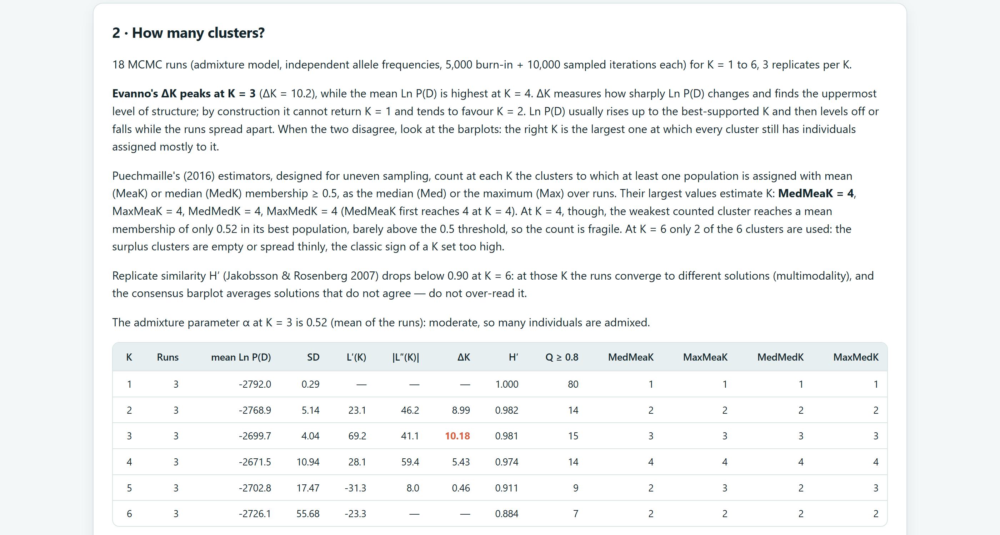
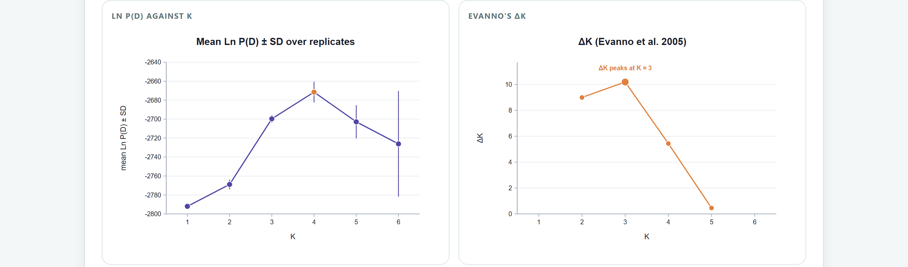
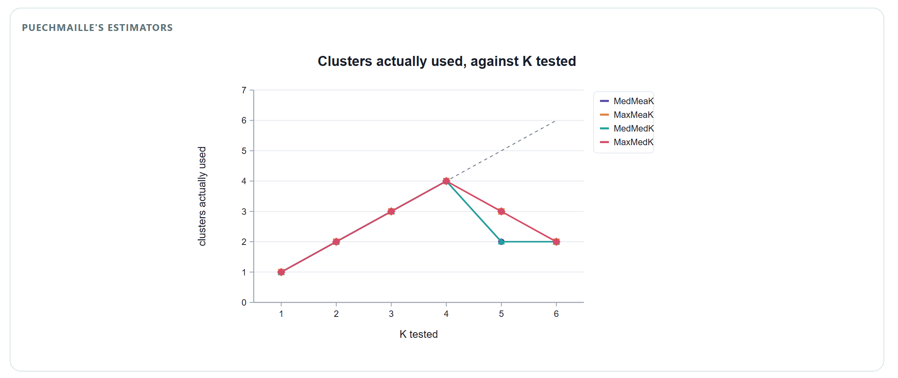
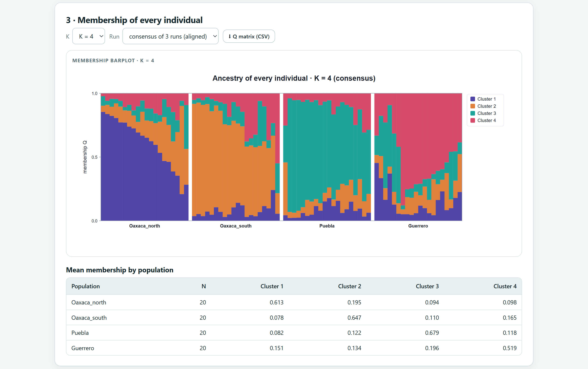
Las tres razas de maíz difieren, pero poco: θ = 0.049 en el capítulo 6. Con 8 microsatélites y los ajustes predeterminados, el modelo de mezcla no las separa, y el ejemplo muestra por qué no basta con leer ΔK.
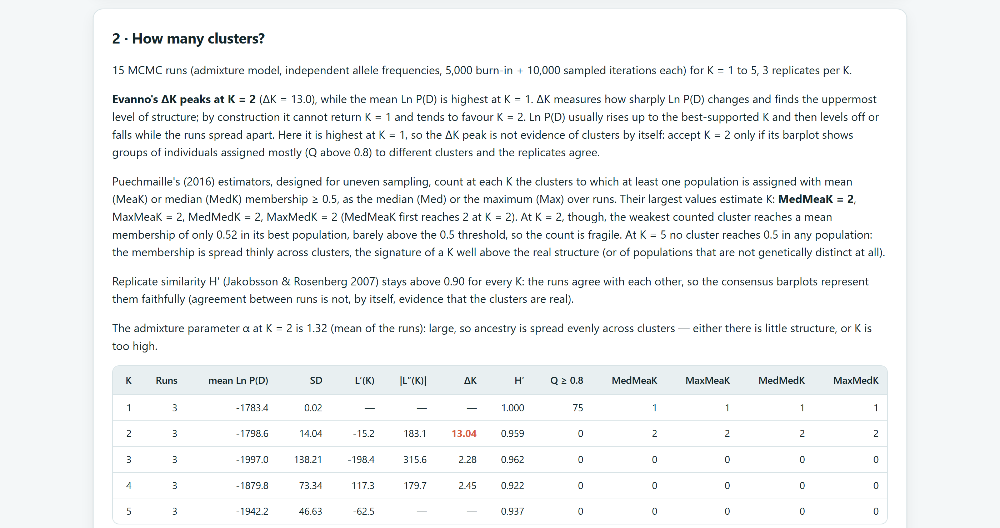
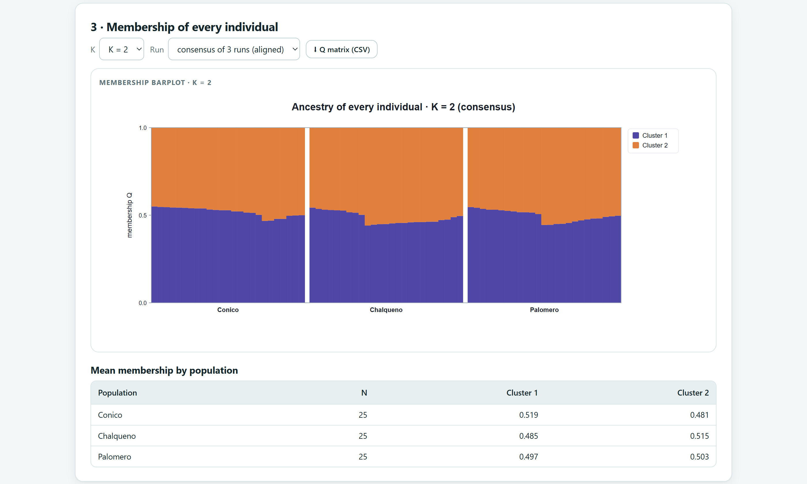
El AMOVA del capítulo 6 encontró diferencias significativas entre estas razas, y el DAPC de la sección 8.3 las distingue en 72 % de los casos. El modelo bayesiano necesita diferenciación moderada, o muchos loci, para formar grupos de individuos; con diferencias pequeñas y pocos loci, la respuesta honesta es “un grupo”. Además, los datos simulados de este ejemplo tienen un déficit de heterocigotos dentro de las razas (F = 0.16), que el modelo no espera.
El análisis discriminante de componentes principales (Jombart, Devillard y Balloux, 2010) no usa un modelo genético: no supone Hardy–Weinberg ni loci independientes. Primero resume los genotipos con un análisis de componentes principales (PCA) y después busca los ejes que mejor separan a los grupos, ya sean las poblaciones que declaraste o grupos que el propio método encuentra.
El DAPC calcula, para cada individuo, la probabilidad de pertenecer a cada grupo, y lo reasigna al más probable. Ese porcentaje de éxito es optimista, porque los mismos individuos definieron los ejes. La app calcula también el éxito dejando uno fuera: cada individuo se clasifica con un análisis discriminante construido sin él. Esa es la cifra que conviene reportar y comparar con el azar (1/número de grupos).
| Componentes conservados | 2 | 6 | 10 | 12 | 15 | 18 | 22 (automático) | 25 |
|---|---|---|---|---|---|---|---|---|
| Varianza retenida (%) | 17.4 | 42.7 | 60.9 | 68.1 | 77.2 | 84.5 | 91.0 | 94.4 |
| Reasignación (%) | 56.0 | 68.0 | 77.3 | 80.0 | 88.0 | 92.0 | 94.7 | 92.0 |
| Dejando uno fuera (%) | 54.7 | 64.0 | 68.0 | 70.7 | 70.7 | 72.0 | 72.0 | 76.0 |
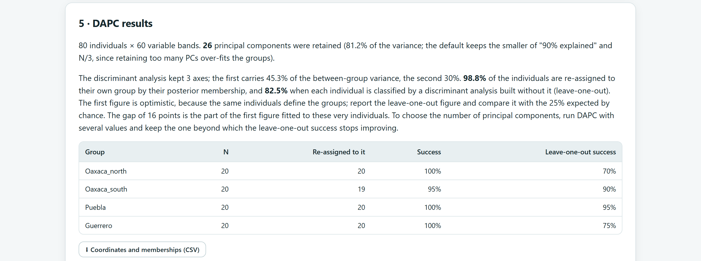
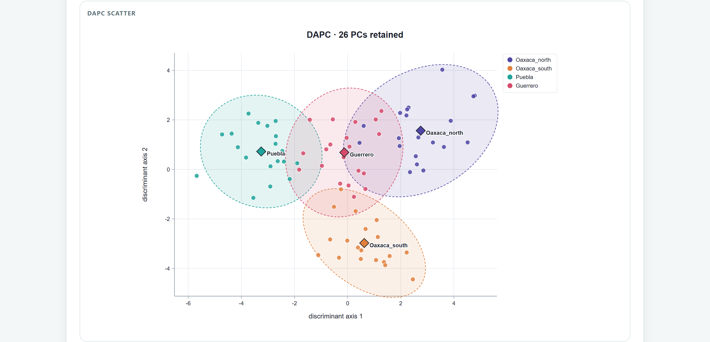
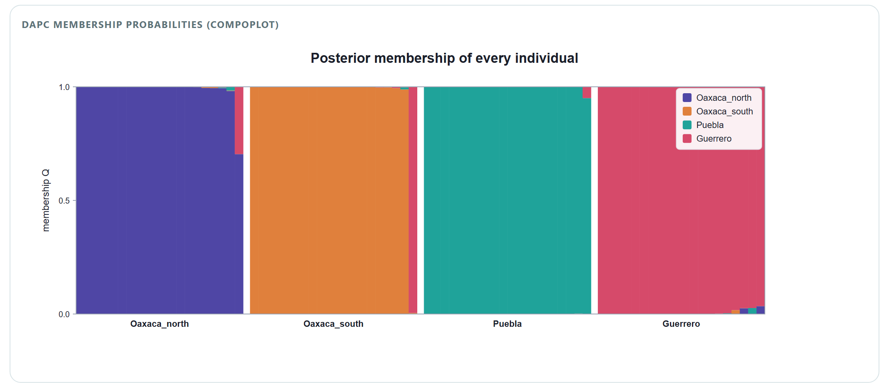
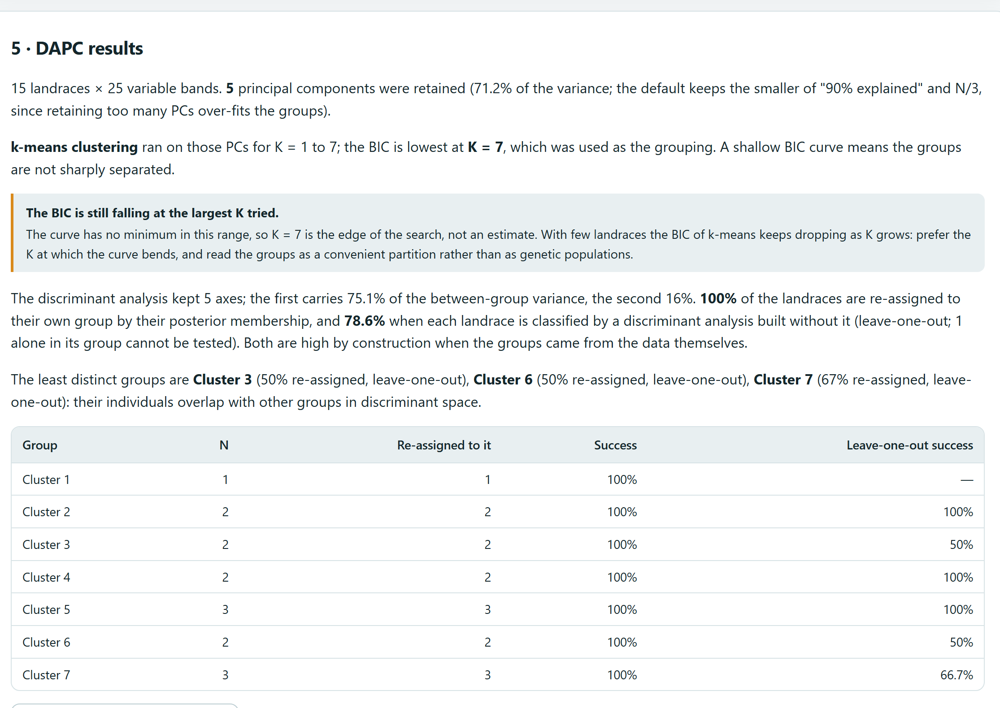
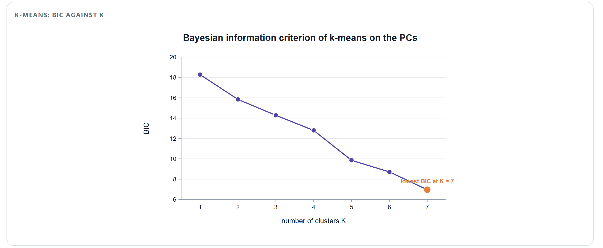
| Si… | entonces… |
|---|---|
| El éxito dejando uno fuera supera con claridad al azar | Los grupos son distinguibles genéticamente. Reporta esa cifra, no la reasignación. |
| La reasignación supera por mucho al éxito dejando uno fuera | Parte del éxito es ajuste a la muestra. Prueba varios números de componentes y quédate con aquel a partir del cual el éxito dejando uno fuera deja de mejorar (tabla 8.3). |
| Un grupo tiene éxito bajo (menos de 70 %) | Sus individuos se confunden con otros grupos; mira con cuáles en la gráfica de dispersión. |
| Grupos encontrados por k-means | El éxito es alto por construcción. Busca en la curva de BIC un mínimo o un codo; si sigue bajando en el mayor K probado, no hay óptimo y los grupos son solo una partición cómoda. |
La prueba de asignación responde otra pregunta: ¿cada individuo se parece más a la población donde lo colectaste o a otra? Calcula la probabilidad de su genotipo multilocus en cada población, suponiendo Hardy–Weinberg (p² para un homocigoto, 2pq para un heterocigoto, multiplicando entre loci), y lo asigna a la población donde esa probabilidad es mayor (Paetkau y colaboradores, 1995; Rannala y Mountain, 1997).
| Método | Frecuencia | Comentario |
|---|---|---|
| Rannala y Mountain (1997) bayesiano, predeterminado | (na + 1/k) / (n + 1) | Un alelo ausente en la población recibe una frecuencia pequeña pero razonable. Es el método recomendado. |
| Paetkau y colaboradores (1995) | na / n, o 0.01 si el alelo falta | El valor 0.01 es una convención arbitraria; se incluye para comparar con estudios antiguos. |
Un locus con dos alelos. En la población 1 hay 30 copias de A y 10 de B (20 plantas); en la población 2, 12 de A y 28 de B. La planta es AA y se colectó en la población 1, así que antes de calcular se quitan sus dos copias de A de esa población (dejando uno fuera): quedan 28 de 38.
| Población | Frecuencia de A (Rannala y Mountain) | L = p² | ln L |
|---|---|---|---|
| 1 (su población) | (28 + 1/2) / (38 + 1) = 0.731 | 0.534 | −0.63 |
| 2 | (12 + 1/2) / (40 + 1) = 0.305 | 0.093 | −2.38 |
El genotipo es 5.7 veces más probable en la población 1: se asigna a su propia población. Con varios loci se suman los ln L de cada locus. Sin dejarla fuera, la frecuencia de A en su población sería 0.744 y la asignación correcta parecería un poco más fácil de lo que es.
Un individuo mal asignado no es necesariamente un migrante: si las poblaciones se parecen, muchos residentes encajan casi igual de bien en otra. Para separar ambos casos, la app calcula λ = ln(Lhome/Lmax), donde Lhome es la verosimilitud en la población donde se colectó y Lmax la mayor entre todas (Paetkau y colaboradores, 2004). λ vale 0 si el individuo encaja mejor en su población y es negativo si encaja mejor en otra. Luego simula genotipos de residentes de esa población (500 por omisión) y calcula λ para cada uno; cada genotipo simulado se evalúa contra un remuestreo con reemplazo de la población, para que tenga el mismo error de muestreo que un residente real evaluado dejándolo fuera. El valor P es la fracción de residentes simulados con un λ tan bajo o más. Con P < α (0.01 por omisión) el individuo se marca como posible migrante.
| Si… | entonces… |
|---|---|
| La autoasignación es alta | Las poblaciones son distinguibles. Compárala con el azar (1/número de poblaciones) y con el FST del capítulo 6: sube con la diferenciación y con el número y la variabilidad de los loci (Cornuet y colaboradores, 1999). |
| Dos poblaciones intercambian muchos individuos en la matriz | Son el par menos diferenciado. No es prueba de flujo génico actual. |
| Pocos individuos marcados como migrantes | Con N individuos y α = 0.01 se esperan unos N × 0.01 por azar. Si el número marcado no pasa mucho de ese valor, trátalos como candidatos a revisar, no como migrantes probados. |
| Un individuo mal asignado con P alto | Es un residente que se parece a otra población, no un migrante. |
| Poblaciones con menos de 5 individuos | No entran a la prueba: sus frecuencias no son confiables. |
La prueba supone que todas las poblaciones de origen posibles están en los datos. Un migrante de una población no muestreada aparece como un individuo raro en todas.
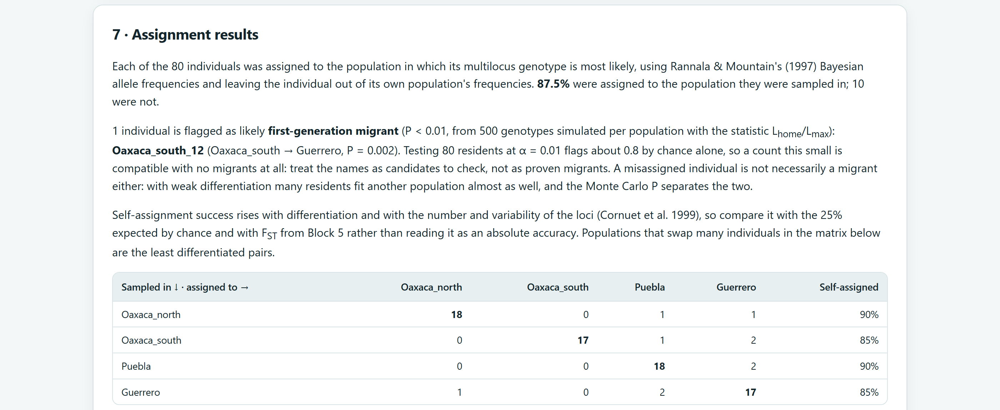
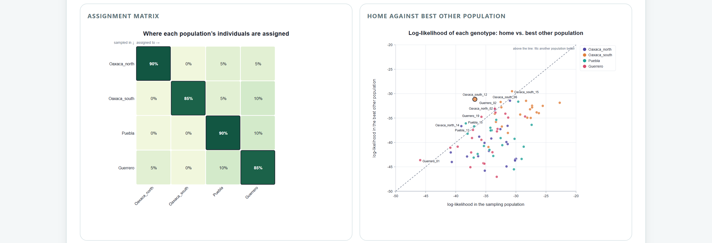
El Bloque 7 se abre con seis individuos o más y tres marcadores polimórficos; no se aplica a caracteres morfológicos ni a un solo alineamiento de secuencias. Las tres partes (agrupamiento bayesiano, DAPC y asignación) se corren por separado con su propio botón.
| Ajuste | Opciones | Recomendación |
|---|---|---|
| Model | Admixture (con mezcla) o No admixture (cada individuo de un solo grupo). | Con mezcla, salvo que sepas que no hay híbridos. |
| K from · K to | 1 a 20. Al entrar, K va de 1 al número de poblaciones más 2. | Incluye K = 1 y al menos dos valores por encima del esperado. |
| Replicates per K | 1 a 20 (predeterminado 3). ΔK necesita 2 o más. | 10 a 20 para publicar. |
| Burn-in iterations · Sampled iterations | Predeterminado 5000 + 10 000. | 1000 + 2000 para explorar; 50 000 + 100 000 para publicar. |
| Random seed | Número entero; también lo usan el DAPC y la asignación. | Repórtala en los métodos. |
| Groups (DAPC) | Las poblaciones del Bloque 2, o grupos encontrados por k-means con K elegido por BIC (Largest K to try, predeterminado 10). | Poblaciones si las hay; k-means para explorar. |
| Principal components retained | Vacío: el menor entre 90 % de la varianza y N/3. | Compara varios valores con el éxito dejando uno fuera. |
| Allele frequencies (asignación) | Rannala y Mountain (1997) o Paetkau y colaboradores (1995). | Rannala y Mountain. |
| Simulated genotypes per population | 0 a 10 000 (predeterminado 500); 0 omite la prueba de migrantes. | 500; 1000 o más para publicar. |
| Migrant threshold α | 0.001 a 0.1 (predeterminado 0.01). | 0.01. |
| Tarjeta | Contenido | Se descarga |
|---|---|---|
| 2 · How many clusters? | Interpretación, tabla de K (Ln P(D), ΔK, H′, individuos con Q ≥ 0.8 y estimadores de Puechmaille), gráficas de Ln P(D), ΔK y Puechmaille. | — |
| 3 · Membership of every individual | Gráfica de barras del K y la corrida elegidos (consenso o cada réplica) y pertenencia media por población. | Q matrix (CSV) |
| 5 · DAPC results | Interpretación, éxito por grupo (reasignación y dejando uno fuera), curva de BIC si hubo k-means, dispersión y probabilidades de pertenencia. | Coordinates and memberships (CSV) |
| 7 · Assignment results | Interpretación, matriz de asignación, mapa de calor, gráfica de verosimilitudes y tabla de cada individuo ordenada por el valor P. | Assignment of every individual (CSV) |
Las cuatro poblaciones de agave, con 20 plantas y 60 bandas cada una, recorren todo el bloque. Los valores de este capítulo son los que produce la app con los ajustes predeterminados y la semilla 1.
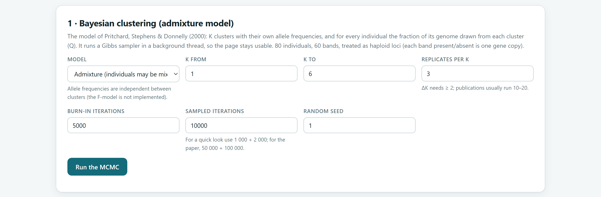
Del agrupamiento bayesiano: el modelo, los valores de K probados, el número de réplicas, las iteraciones de burn-in y de muestreo, la semilla, y todos los criterios para elegir K con la gráfica de barras del K elegido (y, si difieren, la del K de ΔK). Del DAPC: el número de componentes, cómo se definieron los grupos y el éxito dejando uno fuera. De la asignación: el método de frecuencias, la autoasignación y, para los migrantes, el número de simulaciones, α y cuántos se esperan por azar. La sección de métodos del informe del Bloque 10 redacta todo esto.
Para este manual, el Ln P(D) de la app con K = 1 se comparó con su valor analítico bajo la distribución de Dirichlet (−1783.4 contra −1783.3 con el maíz), y el generador de números gamma reprodujo la media y la varianza teóricas. Con datos simulados de tres grupos (90 individuos, 10 loci), Ln P(D) y ΔK señalaron K = 3, H′ fue 0.97 y la Q estimada difirió de la verdadera en 0.05 en promedio. ΔK, H′ y los estimadores de Puechmaille se recalcularon por separado. El PCA, los ejes discriminantes, las probabilidades de pertenencia y el éxito dejando uno fuera del DAPC coincidieron con un análisis discriminante independiente (diferencias menores que 10−12). Las verosimilitudes de la asignación coincidieron con un cálculo independiente (10−15). Sin migrantes, la prueba marcó 2 de 270 residentes con P < 0.01, lo esperado por azar, y detectó 9 de 12 migrantes plantados.
El siguiente capítulo cambia de marcadores a secuencias: el Bloque 8 analiza la diversidad de haplotipos, las pruebas de neutralidad, la historia demográfica y la red de haplotipos de un alineamiento.